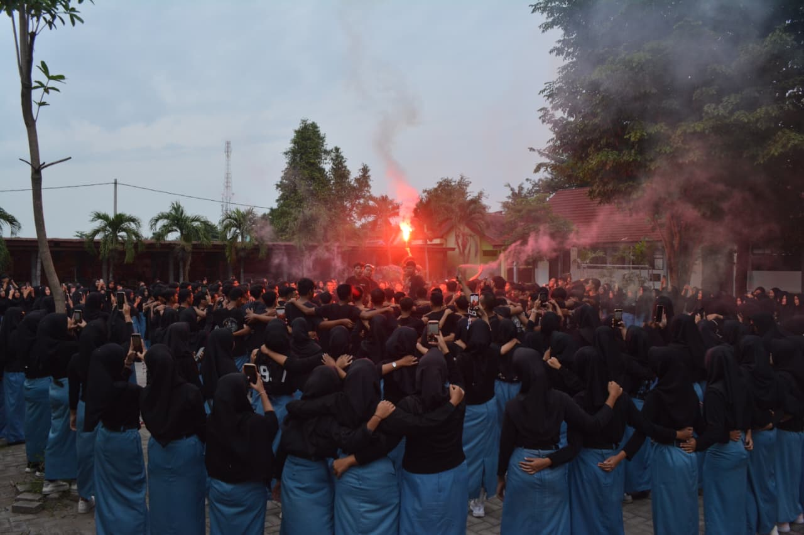
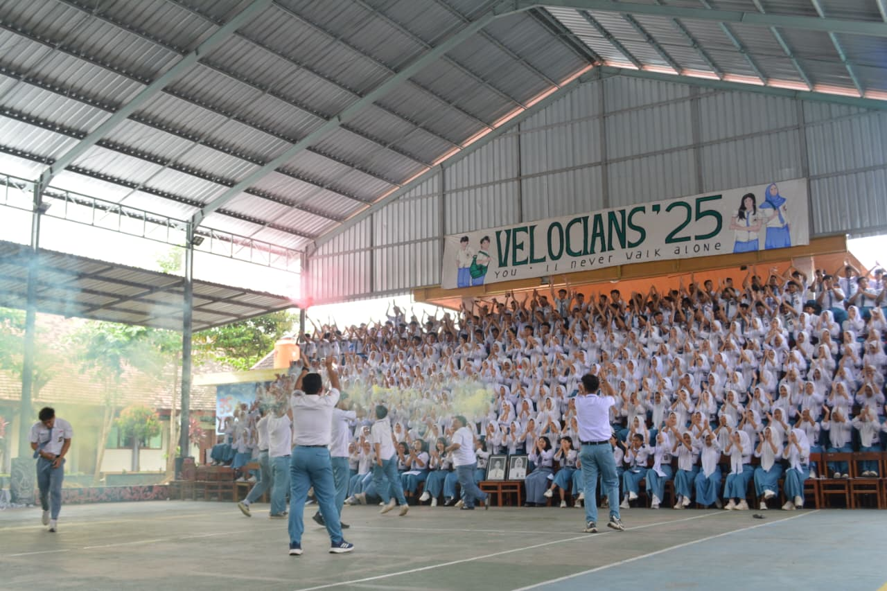

Oleh ~ Maya Puspa Wardhani 24 September 2026


Di antara deru waktu yang bergegas, ada hari-hari di mana kita memilih untuk berhenti sebentar. Merapatkan barisan, menyatukan rasa, dan membiarkan riuh meredam segala ragu.
Velocians '25 bukan sekadar serangkaian nama yang terukir di atas kertas, bukan pula angka yang lekas usai ketika bel kelulusan berbunyi. Ia adalah bait-bait cerita tentang bahu yang saling bersandar, tentang tawa yang melenyapkan lelah, dan tentang semangat yang enggan padam meski senja mulai datang.
Kita belajar bahwa jarak terdekat dari sebuah perpisahan adalah keberanian untuk merayakan kebersamaan hari ini. Dalam setiap sorak yang kita gaungkan, ada janji tersirat yang mengalun lirih: bahwa tak seorang pun dari kita yang akan dibiarkan berjalan dalam sepi.
Suatu saat, ketika riuh ini tinggal gaung dan kita mengejar takdir di persimpangan yang berbeda, biarlah ruang ini menjadi saksi. Bahwa kita pernah ada, pernah membara, dan pernah sejiwa.
Terima kasih telah menjadi warna dalam lembar yang sama.
Velocians '25, You'll Never Walk Alone.